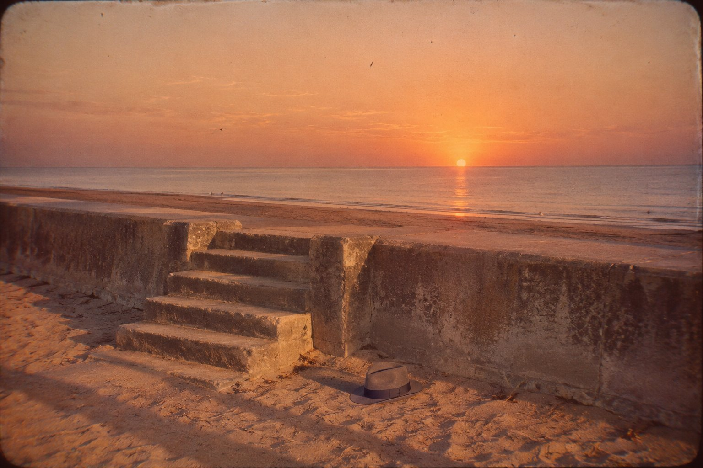

Пять строк

От составителя
Эту папку я нашла в нижнем ящике дедова письменного стола, под коробкой с запонками, когда разбирала дом на Эспланаде. Дом продан, новые хозяева въезжают после Рождества, и мне пришлось наконец решать, что делать с вещами трёх поколений. У нас в семье ничего не выбрасывали, потому что выбросить вещь значит решить, что она больше не нужна, а решать мы не любили.
Мой дед, Гарольд Эшбёрн, был солиситором в Гленелге с середины двадцатых годов до шестьдесят восьмого. Солиситор в Австралии — это не адвокат из кино, который кричит на присяжных. Это человек с медной табличкой у двери, к которому приходят составить завещание, купить дом, развестись или спросить, что делать, если сосед передвинул забор на два фута. Дед сорок лет занимался этим на Джетти-роуд, над аптекой, и, насколько я знаю, ни разу никого не обманул. Сам он говорил, что для его профессии это достижение скромное, но встречается реже, чем хотелось бы.
Папка обыкновенная, картонная, перевязана розовой тесьмой, какой солиситоры вязали дела, пока не придумали пластиковые скоросшиватели. На обложке его рукой: «Миссис Дж. Т., Мозли-стрит. Личное. Не уничтожать. Не вскрывать, пока жива миссис Т.». Миссис Т. умерла в 2007 году. Дед умер в восьмидесятом, когда мне было двенадцать. Мама, по-моему, догадывалась, что лежит в папке, и не открывала её из уважения, а может быть, из страха; у неё это часто было одно и то же.
Внутри лежат его памятные записки — так солиситоры называют заметки, которые пишут для себя после разговора с клиентом, чтобы через год вспомнить, что им сказали и что они посоветовали. Ещё там письмо на шести листках из блокнота, написанное карандашом и сложенное вчетверо, несколько газетных вырезок, письмо от мельбурнского солиситора и листок, на котором дед выписал пять строк заглавных букв и под каждой буквой поставил слово.
О Сомертонском человеке сейчас знает каждый, кто вообще что-нибудь знает об Аделаиде. Первого декабря 1948 года на пляже Сомертон-Парка нашли мёртвого мужчину без документов, со срезанными ярлыками на одежде, и семьдесят с лишним лет никто не мог сказать, кто он такой. Были шпионы, яды, шифр в книжке стихов и медсестра, которая отвела глаза. В 2022 году профессор Аббот назвал его имя по ДНК из волос, застрявших в гипсе посмертной маски: Карл Уэбб, которого все звали Чарльзом, электрик и мастер точных приборов из Мельбурна. Полиция Южной Австралии до сих пор не подтвердила это официально и в этом году обещает наконец передать отчёт коронеру.
В дедовой папке это имя записано его рукой в январе 1949 года.
Я долго думала, как поступить. Сначала решила просто перепечатать всё по порядку, потому что дедов почерк, мелкий и наклонный, будто буквы идут против ветра, трудно читать даже мне. Я ничего не правила, кроме явных описок. Там, где без пояснения нельзя, пишу в скобках от себя. Стихи в письме оставляю по-английски, иначе вы не увидите того, что увидел дед, и рядом даю свой перевод, неуклюжий, потому что я не поэт, а бывшая учительница географии. Для кого я всё это делаю, скажу в конце.
Памятная записка. Пятница, 3 декабря 1948 года
Сегодня около пяти, когда мисс Пёрселл уже накрыла машинку чехлом, пришла миссис Т. с Мозли-стрит. Мы знакомы только в лицо. Она медсестра, недавно в Гленелге, с маленьким сыном; прошлой зимой младший Феннелл разбил руку о волнорез, и она перевязала его прямо на Эспланаде лучше, чем, по словам старшей миссис Феннелл, это сделал бы доктор Росситер, если бы его нашли.
Записи у неё не было, и она извинилась, что пришла без предупреждения. Сказала, что ей нужен совет, что в Аделаиде она почти никого не знает, а дело такое, о котором не говорят с подругами, даже если они есть.
Она положила передо мной письмо и вчерашний «Эдвертайзер», сложенный на заметке о мужчине, найденном мёртвым в среду утром на пляже напротив Дома для детей-калек. Эту заметку я читал. У меня были свои причины перечитать её дважды; о них отдельно.
Письмо она нашла в почтовом ящике в среду утром, когда вышла за молоком. Конверт без марки и без адреса, на нём одно слово: «Джо». Так её звали в Сиднее. В четверг утром ей попалась заметка в газете. До пяти часов пятницы она решала, идти ли ко мне, и, видимо, решила, когда поняла, что больше не сможет решать.
Ниже её рассказ, как я его запомнил. Она говорила ровно, по порядку, как, должно быть, докладывают старшей сестре о больном, и остановилась только один раз.
В августе 1942 года она была практиканткой первого года в Королевской больнице Норт-Шор в Сиднее. Однажды в свободный день в поезде Норт-Шорской линии ей уступил место лётчик, который ехал в Брэдфилд-парк, на сборный пункт ВВС в Линдфилде, где ждали парохода парни, которых посылали доучиваться в Канаду. Его звали Джек Кин. Он был из Мельбурна и только что закончил лётную школу в Беналле. До парохода у него оставалось десять дней. Шесть вечеров из десяти он, по её словам, простоял у больничных ворот, потому что дальше ворот практиканток не выпускали, а свиданий с ними, строго говоря, не разрешали вовсе. В последний вечер она подарила ему «Рубайят» Омара Хайяма в переводе Фицджеральда, маленькую книжку, купленную в лавке на Кинг-стрит. (Это персидские четверостишия о вине, розах и о том, что всё проходит. В войну их дарили уходящим так же часто, как карманные Евангелия, и, кажется, читали чаще. — Х. Э.)
Пароход ушёл девятого августа. Он писал ей из Канады, сначала из Эдмонтона, потом из Эйлмера в Онтарио, где в январе получил крылышки. В июле прислал из Нью-Йорка открытку со статуей Свободы. Потом писал из Англии и из Северной Ирландии. Последнее письмо пришло в ноябре сорок третьего. В январе сорок четвёртого она прочла его фамилию в списке потерь в сиднейской газете: флаинг-офицер (то есть лейтенант авиации) Дж. Р. Кин, Брансуик, Виктория, погиб в результате несчастного случая.
Здесь она и остановилась. Я налил ей воды из графина, и она выпила половину.
Родным его она не писала: она с ними не была знакома, а он говорил о них так, что ей казалось, будто знает их всех: мать, отца, машиниста сцены в театре, брата и дядю Чарли, который научил его паять, когда Джеку было двенадцать лет.
Я спросил, чего она от меня ждёт. Она ответила, что у неё три вопроса: обязана ли она идти в полицию; если умерший — дядя Джека, должна ли об этом узнать его семья и должна ли сообщить им она; и, наконец, виновата ли она в том, что случилось.
Я сказал, что на первые два вопроса отвечу, когда подумаю, и не позже понедельника. На третий ответил сразу: нет.
Я попросил разрешения оставить письмо у себя до утра, чтобы снять копию. Она сказала, чтобы я оставил его совсем. Хранить его дома она не может: в доме ребёнок и в доме мужчина, который вправе спросить, что это за письмо. Сжечь его она тоже не может. О муже она больше не сказала ни слова, и я ничего не спрашивал.
Письмо прилагаю.
Письмо, найденное в почтовом ящике
(Шесть листков из блокнота, линованных, исписанных карандашом с обеих сторон. Почерк крупный, ровный, с наклоном назад, как пишут люди, привыкшие к чертежам. Конверт без марки, надписан «Джо». — Х. Э.)
Гленелг, вторник, 30 ноября, на скамейке у пристани
Дорогая Джо,
простите, что так начинаю, другого вашего имени я не знаю, а мисс Харкнесс вы, судя по коляске, уже не мисс.
Меня зовут Чарли, я дядя Джека Кина. Если он обо мне рассказывал, то, наверно, про паяльник. Я младший брат его матери, и когда Джеку было двенадцать, я взял его с собой на работу и показал, с какого конца за паяльник берутся. Потом он три года работал в радиомастерской и уверял, что все умные мысли в жизни надышал канифолью.
Вчера было пять лет, как его нет. Двадцать девятого ноября сорок третьего года он разбился в Северной Ирландии на «Хадсоне», на учебном вылете, и с ним ещё трое ребят. Вы, должно быть, знаете. Я пишу это, потому что не знаю, что вы знаете, а чего нет, и лучше скажу лишнее.
Его вещи пришли домой осенью сорок четвёртого, в железном сундуке и синем жестяном чемодане. Фреда, его мать, раздала почти всё, потому что не могла на них смотреть, а мне отдала то, что пришлось по росту: пиджак, купленный в Нью-Йорке, брюки, рубашки, туфли, гребешок и ещё всякую мелочь из карманов. Мы с ним всегда были одного роста, без какого-нибудь дюйма. Мальчишкой он мерился со мной у дверного косяка, а потом перестал, когда понял, что догнал. Прежде чем отдать мне его одежду, Фреда взяла ножницы и срезала с каждого воротника и с каждого пояса всё, что там было пришито: и ленточки с его именем, и магазинные ярлыки, потому что не стала разбираться, где что. Она сказала, что не может видеть его имя на другом мужчине, даже на брате. Я не спорил.
Ещё она отдала мне его книгу. Знала, что из всей семьи стихи читаю только я.
Это та книга, которую вы ему подарили. Он писал мне про вас из Канады, из Эдмонтона и потом из Эйлмера. Вот что он писал: «Джо из Норт-Шор подарила мне персидские стихи, я читаю по одному на ночь. Там всё про вино, а я месяц не пил, так что это вроде пытки». Писал он и ещё многое, но это вам знать не обязательно, а может быть, и обязательно, я не знаю. Скажу так: когда взрослый парень пишет дяде не про самолёты, а про девушку, это о чём-то говорит.
Книга четыре года стояла у меня на полке, и я не знал, что с ней делать. В этом году решил, что её надо вернуть хозяйке, раз хозяин вернуть не может. Найти вас оказалось непросто, на это ушла почти вся зима и весна. Я написал в больницу Норт-Шор; одна сестра ответила, что вы уехали в Мельбурн, в Ментон, — представьте, полчаса от меня поездом. В Ментоне хозяйка дома, где вы снимали комнату, дала мне ваш адрес здесь и сказала, что телефон есть в справочнике. Номер я записал на обложке книги, чтобы позвонить с вокзала.
Теперь про сегодняшний день. Мне нужно, чтобы вы знали, что я не лез в вашу жизнь, а только постоял у калитки.
Я приехал вечерним «Оверлендом», в сидячем вагоне, и, против обыкновения, проспал всю ночь. Утром, когда поезд спускался с холмов, внизу вдруг открылась вся равнина, а за ней полоса воды, синяя, как на школьной карте. Я понял, что это ваш залив, и подумал, что Джек бы засмеялся, если бы увидел, как я прилип к окну.
На вокзале я умылся и побрился в уборной и отдал почистить туфли чистильщику, как человек, который идёт свататься, что в мои годы, когда на висках уже соль с перцем, просто смешно. Носильщик дал мне номер пансиона в Гленелге, и я заказал по телефону комнату на ночь. Потом позвонил вам. Это я звонил около половины одиннадцатого и молчал. Трубку взяли, и за вашим голосом плакал ребёнок, и я подумал, что звоню не вовремя и что вовремя тут уже ничего не будет, и повесил трубку. Простите, это было невежливо.
Потом я сделал глупость, какие делает приезжий. Спросил в кассе билет до пляжа, и мне продали билет до Хенли-Бич, потому что я не сказал, до которого. Пока я стоял в очереди в камеру хранения (чемодан я решил оставить на вокзале: нехорошо приходить к людям с чемоданом, как будто собрался у них жить), поезд ушёл, а носильщик сказал, что Мозли-стрит вообще в Гленелге и туда ходит автобус от Норт-Террас, прямо напротив вокзала. Так что у меня остался билет до Хенли-Бич, по которому я никуда не поеду.
Дом я нашёл сразу. У крыльца стояла коляска с поднятым верхом, на перилах сушилось маленькое одеяльце, а в открытом окне кто-то пел без слов, как поют, когда укачивают. Я постоял у калитки столько, сколько стоят, когда разбирают номер дома, и пошёл дальше. Не думайте, что я струсил, хотя и это тоже. Я подумал, что книга от погибшего парня — плохой подарок в дом, где стоит коляска. Ваш муж будет вправе спросить, откуда она, а вы не обязаны ему отвечать, и лучше, чтобы вам не пришлось. Джек со мной согласился бы. Он был добрый парень, хотя в лётной школе ему написали в характеристике «излишне самоуверен», и он сам показывал мне это и хохотал.
Книгу я оставлю там, где её найдёт кто-нибудь чужой и, может быть, прочтёт. Себе возьму последний клочок страницы, где напечатано «Tamám Shud». Джек объяснил мне, что по-персидски это значит «кончено»; ему сказал кто-то в Канаде. Мне нравится, что у книги, где столько про смерть, такой короткий конец. Клочок я положу в кармашек для часов на поясе его брюк. Американцы до сих пор шьют эти кармашки, хотя часов там никто не носит.
В поезде я сочинил вам стихи, как умею. Я не Фицджеральд, я электрик, и стихи у меня всегда выходят про то, как вещи кончаются. Так уж получается, и я давно перестал с этим бороться. Сначала я записал их на обложке книги по первым буквам слов, чтобы не забыть по дороге; так я с детства запоминаю схемы. Строчку про мальчика начал раньше времени, на втором месте, и зачеркнул, потому что электрик я лучше, чем поэт. Вот они целиком:
Wine, roses gone; only a book, a borrowed day.
With this book I make peace, and now ends the play.
My lad is asleep, but oceans away, in a quiet churchyard.
I took the midnight train, slept, and morning showed the gulf and bay.
(Мой перевод, как сумела, с рифмой там же, где у него:
Ни вина и ни роз; только книга да день, что дан взаймы судьбой.
Этой книгой я мир заключаю, и окончен спектакль мой.
Мой мальчик спит, но за морями, на тихом погосте.
Я сел в полночный поезд, спал, и утро открыло мне залив, и бухту, и прибой.
— Х. Э.)
Теперь самое главное, и простите, что о себе. У меня плохое сердце. Доктор в Мельбурне даёт мне год, если я буду беречься, а я в жизни ни разу не берёгся, так что считайте полгода. Я пью капли наперстянки, от которых всё вокруг кажется немного жёлтым, и это даже красиво, когда смотришь на море. Если вы когда-нибудь обо мне услышите, а это может случиться, потому что сердце останавливается там, где ему вздумается, пусть всё будет как будет. Не пишите Фреде. В сорок третьем ей принесли извещение про Джека, а за семь недель до того пришло известие про нашего брата Роя, который умер в японском плену в Таиланде. Мне кажется, одной семье за одну осень этого хватит на всю жизнь.
Бумажник и всё, на чём есть моё имя, я оставил дома. Не думайте, что я что-нибудь задумал. Просто, если со мной что случится, не хочу, чтобы полиция пошла по следу ко мне домой, а оттуда к Фреде или к вам. Я давно живу один, и за мной никому не нужно приезжать.
Сейчас пойду посижу у моря, посмотрю, как солнце садится в ваш залив, а потом в пансион, комната у меня до утра. Завтра вечером «Оверленд» домой. Письмо брошу вам в ящик по дороге.
Будьте счастливы, Джо. Он бы этого хотел.
Чарли
P. S. Кубок в Мельбурне в этом году выиграл Римфайр, восемьдесят к одному, на полголовы, по фотографии; первый раз в жизни у них на финише стояла камера. Я ставил на Дарк Марна. Вот такой я человек.
Памятная записка. Суббота, 4 декабря 1948 года
Пишу это для себя, потому что больше писать некому, а сказать Мардж я пока не могу.
Во вторник, тридцатого, около семи вечера я вывел Брамбла на Эспланаду, как всегда перед ужином. У лестницы напротив Дома для детей-калек я остановился, потому что Брамбл остановился: он старый пёс и любит смотреть с лестницы на воду не меньше, чем я. Солнце уже касалось воды. Внизу, у волнореза, сидел на песке мужчина в сером костюме, спиной к стенке, вытянув ноги и скрестив их, а шляпа лежала рядом с ним на песке. Пока я смотрел, он поднял правую руку, вытянул её прямо перед собой, к солнцу, подержал так и уронил. Я решил, что он выпил и прощается с солнцем, как прощаются с хозяином в пабе, когда закрывают, и подумал: на здоровье. Брамбл тянул вниз, к воде, но я его не пустил, чтобы он не помешал человеку. Потом мы пошли дальше, к Брайтону.
Возвращался я в десятом часу, в темноте, и вниз с лестницы не смотрел.
В четверг я прочёл в «Эдвертайзере», что тело нашли у самого волнореза напротив Дома, что он сидел, прислонившись к стенке, вытянув и скрестив ноги, и что на воротнике у него лежала недокуренная сигарета. Я прочёл заметку два раза и решил, что сказать мне нечего: я видел человека, который сидел на пляже и поднял руку, и это могли видеть ещё двадцать человек. Это было правдой. Но правдой было и то, что я не спустился.
Вчера вечером, когда миссис Т. ушла, я снял с полки своего Фицджеральда. Он у меня с университета, как у всякого, кто учился в двадцатые и считал, что разбирается в жизни. Последнее четверостишие я помнил приблизительно и проверил. В нём пьющий просит виночерпия: когда ты пойдёшь меж гостей, рассыпанных по траве, как звёзды, и дойдёшь до места, где сидел я, — переверни пустую чашу. И потом два слова: «Tamám Shud».
Он поднимал пустую руку, как поднимают стакан. Накануне было пять лет со дня гибели Джека. Он пил за Джека, а я подумал, что за солнце.
Теперь по существу, потому что в понедельник мне нужно ей ответить.
Обязана ли миссис Т. идти в полицию? Нет. Закон не требует от гражданина сообщать полиции догадку, а у неё только догадка. Человека она никогда не видела. Письмо подписано одним именем, без фамилии, и о том, что автор его умер, в нём ничего не сказано. Насколько можно судить, никакого преступления нет: человек с больным сердцем сел на песок и умер. Если коронер вызовет её и спросит, она обязана сказать правду. Она говорит, что так и сделает, и я ей верю. Если придёт полиция, то же самое.
Обязана ли она сообщить его семье? Нет. Кроме того, он прямо просил её этого не делать, и просьба эта ясная.
И третье, о чём она не спрашивала, но что касается меня. Всё, что она мне рассказала, она рассказала солиситору, чтобы получить совет, и передать это кому бы то ни было без её согласия, в том числе коронеру, я не вправе. Мне это нравится меньше, чем следовало бы. Но таков закон, и в этом случае закон, по-моему, прав.
О лестнице я ей пока не скажу. Скажу, когда буду знать, что это он.
Памятная записка. Понедельник, 6 декабря 1948 года
Миссис Т. была в одиннадцать. Ответил ей, как записано выше. Она выслушала и сказала, что хочет одного: знать, он ли это, и так, чтобы никто не узнал, что об этом спрашивали. Я обещал написать в Мельбурн Кэрью и просить его навести справки о семье Кин, не упоминая ни Аделаиды, ни её имени. Она спросила, сколько это будет стоить. Я сказал, что Кэрью мне должен с тридцать шестого года за дело о мельнице в Балларате и что я с удовольствием наконец получу с него этот долг. Это не совсем правда, но и не совсем ложь, а ей сейчас не нужно думать о деньгах.
Написал Кэрью.
Письмо Дж. Л. Кэрью, солиситора, Коллинз-стрит, Мельбурн. 20 декабря 1948 года
Дорогой Эшбёрн,
вот что удалось узнать, не задав ни одного прямого вопроса. Мой клерк Хоскинс, человек деликатный и с хорошей памятью на лица, потратил на это три вечера, а пиво я ему пообещал за свой счёт.
Мистер и миссис Кин живут на Стюарт-стрит в Ист-Брансуике. Муж по метрике Томас Джеральд, но зовут его все Джеральдом; он машинист сцены у Дж. К. Уильямсона и, по общему мнению, человек тихий. Их сын Джон Расселл, флаинг-офицер, погиб в 1943 году в Северной Ирландии; есть ещё один сын. Миссис Кин, говорят, после смерти сына сильно сдала.
У миссис Кин есть младший брат, Чарльз Уэбб, по метрике Карл, электрик и мастер точных приборов. С сорок первого года он женат, но супруги разъехались больше года назад. Последнее время он жил один в Саут-Ярре, на Бромби-стрит. Соседка рассказала Хоскинсу, что он распродал мебель и с конца ноября его не видно. В семье, судя по всему, не беспокоятся: по словам соседки, он «из тех, кто уходит». Заявлений о пропаже никто не подавал. Другой его брат, Рой, умер в японском плену в октябре 1943 года.
Ни миссис Кин, ни кого-либо из родных мы ни о чём не спрашивали, и, как ты просил, Аделаида ни разу не упоминалась.
Счёт пришлю, когда будет за что, то есть, надеюсь, никогда. Будь здоров, кланяйся Мардж.
Твой Дж. Л. Кэрью
Памятная записка. Понедельник, 17 января 1949 года
Сказал миссис Т. Его фамилия Уэбб. Она повторила её вслух, как пробуют незнакомое лекарство, и сказала: «Джек никогда не называл его по фамилии. Дядя Чарли, и всё».
Я спросил, что она решила. Она ответила, что сделает так, как он просил: не станет писать матери Джека и не пойдёт в полицию с тем, чего не знает наверняка. Если спросят, скажет правду. Потом добавила: «Он не хотел, чтобы за ним приезжали. Я бы тоже не хотела».
Я сказал ей, что она поступает так, как просил умерший, и что в этом нет греха. Не уверен, что я прав. Уверен, что она права больше, чем я.
Она попросила, чтобы, когда его похоронят, на могилу каждый год тридцатого ноября приносили цветы, от неё, но без её имени, через цветочную лавку, и чтобы платил я из денег, которые она мне будет давать. Я согласился. Похоронят его, видимо, не скоро: тело забальзамировали и держат, потому что полиция всё ещё надеется на опознание.
В субботу газеты сообщили, что на вокзале в камере хранения нашли чемодан, сданный тридцатого ноября после одиннадцати утра, с сорванной биркой, и что полиция считает его вещами Сомертонского человека. На галстуке метка «T. Keane», на мешке для белья — «Keane», на майке — «Kean», без последней буквы. Полиция ищет человека по фамилии Кин во всех списках, какие у неё есть, и, разумеется, не найдёт, потому что все Кины живы, кроме одного, а тот умер пять лет назад.
«Т.» — это Томас, первое имя Джеральда Кина по метрике. Галстук был его, мешок для белья и майка домашние. Фреда срезала имя сына только с того, что носил сын. На вещах мужа и на домашнем белье её ножницы не тронули ничего, потому что там было не его имя.
Ещё в чемодане нашли отвёртку, ножницы, обрезанный нож, трафаретную кисть, моток оранжевой вощёной нитки «Барбур», которой зашит карман у одних брюк. Газеты пишут, что это вещи моряка. Это вещи мастера, который всё чинит сам, потому что живёт один.
Теперь понятно и то, что нашли у него в карманах. Американская алюминиевая расчёска и жевательная резинка «Джуси Фрут» — это, думаю, та «мелочь из карманов» Джека, о которой он пишет. Пачка «Арми Клаб», в которой лежали сигареты «Кенситас», скорее всего, тоже осталась от Джека: в пачку от его сигарет дядя насыпал свои, подешевле. Так делают, когда жалко выбросить пачку.
Памятная записка. Понедельник, 20 июня 1949 года
В прошлый вторник, четырнадцатого, его похоронили на Уэст-Террас. Я был. Стоял сзади, у кипарисов, так, чтобы не попасть в газету. Людей было немного: несколько полицейских, двое газетчиков, кладбищенские рабочие и две женщины, которых, по-моему, никто не знал и которые ходят на все похороны, где нет родных. Похороны оплатили букмекеры с Гранд-стенда; в газете написали, что они не хотят, чтобы его хоронили как нищего. Он ставил на Дарк Марна. Думаю, ему было бы приятно.
Службу читала капитан Армии спасения, женщина по фамилии Уэбб. Она сказала, что у этого человека наверняка есть кому его любить, а знает его один Бог. Я был, кажется, единственным у могилы, кто знал, что у неё и у покойника одна фамилия. Мне очень хотелось ей это сказать, и я, конечно, не сказал.
Миссис Т. не пришла, и правильно.
В пятницу в здании Оддфеллоуз на Флиндерс-стрит коронер Клеланд открыл дознание. Сообщают, что при новом осмотре одежды в кармашке для часов на поясе брюк нашли свёрнутый клочок бумаги с печатными словами «Tamám Shud», и что это последняя страница «Рубайята». Полиция ищет книгу.
Один из свидетелей, женщина, сказала, что во вторник вечером видела, как какой-то мужчина смотрел на него сверху, с лестницы. Это был я. Меня никто не искал, и я не пошёл.
Медицинские показания газеты пересказывают подробно. Селезёнка втрое больше нормы, печень полна застоявшейся крови, в желудке кровь; последняя еда — пирожок за три-четыре часа до смерти; яда не нашли. Время смерти врачи назвали около двух часов ночи, но Росситер говорит, что точнее, чем «ночью», тут ничего сказать нельзя. Одна пара видела его с половины восьмого до восьми: он ни разу не пошевелился и не отгонял комаров. Думаю, к тому времени всё уже кончилось. Пирожки на Джетти-роуд продают в двух лавках, и одна из них стоит напротив пристани, у той скамейки, где он писал письмо. Профессор Хикс сказал, что подозревает очень редкий яд, и, чтобы не учить публику, написал его название на бумажке для коронера. Газеты гадают.
Вчера в клубе я спросил доктора Росситера, не называя имён, что значит такая селезёнка и такая печень. Он сказал, что это бывает у сердечников, у которых сердце давно не справляется, и что кровь стоит в печени, как вода в канаве перед запрудой. Я спросил, мог ли Хикс иметь в виду наперстянку. Он посмотрел на меня поверх стакана и сказал, что это одно из двух названий, которые он сам написал бы на такой бумажке. И что наперстянку прописывают как раз сердечникам, а лишняя ложка капель, выпитая от страха, когда сердце колотится, делает то же, что яд. Так что яд, который ищет вся Австралия, вполне мог лежать у него в кармане в аптечном пузырьке с рецептом.
Коронер допускает, что тело принесли на пляж уже мёртвым: туфли слишком чистые, нет следов рвоты и судорог. Туфли ему почистили на вокзале, и он сам об этом пишет. От лестницы до волнореза десять шагов по плотному песку. Судорог не бывает, когда сердце просто останавливается. Никто его не нёс.
Шляпы утром при нём не было. Во вторник вечером шляпа лежала рядом на песке. За ночь на пляже пропадают вещи и поценнее шляпы.
Памятная записка. Среда, 27 июля 1949 года
Книга нашлась. Неделю назад какой-то человек принёс в полицию «Рубайят», издание «Уиткомб и Томбс», Крайстчерч, 1941 года, у которого вырвана последняя страница. Имени его не называют. Говорят, в конце ноября он нашёл книгу в своей машине с откинутым верхом, оставленной на Джетти-роуд, и не придал этому значения, пока не прочёл в газете о клочке бумаги. Клочок к вырванному месту подошёл.
На задней обложке остались карандашные записи: номер телефона, ещё один номер и пять строк заглавных букв, вторая строка зачёркнута. Полиция напечатала буквы в газетах и просит помощи у всех, кто разбирается в шифрах. Вот они, как в газете:
WRGOABABD
MLIAOI (зачёркнуто)
WTBIMPANETP
MLIABOAIAQC
ITTMTSAMSTGAB
Я сидел над ними с письмом минут десять, хотя хватило бы и двух. Это первые буквы слов его стихов, по одной на слово, без пропусков. Первая строка: Wine, roses gone; only a book, a borrowed day. Вторая, зачёркнутая: My lad is asleep over in — и обрыв; это та строчка про мальчика, которую он начал раньше времени. Третья: With this book I make peace, and now ends the play. Четвёртая: My lad is asleep, but oceans away, in a quiet churchyard. Пятая: I took the midnight train, slept, and morning showed the gulf and bay. Сорок четыре слова, сорок четыре буквы, если не считать зачёркнутых. Зачёркнутая строка похожа на четвёртую, потому что это и есть четвёртая, начатая не на своём месте.
Над буквой O в четвёртой строке на газетном снимке виден маленький крестик. В письме на этом месте стоит oceans. Думаю, он засомневался в слове, как сомневаются все, кто пишет стихи, и оставил его. Первую букву газеты печатают то как M, то как W. Это W: так писали в начальной школе в девятисотые, с петлёй, и буква выходит похожей на M. Q в четвёртой строке — это quiet, никакой ошибки там нет.
Номер телефона на обложке принадлежит миссис Т. Он записал его в поезде, чтобы позвонить с вокзала, и, когда оставлял книгу в чужой машине, забыл про карандаш на обложке. Он был электрик, а не солиситор. Вырвать последнюю страницу он не забыл, а про обложку забыл. Так бывает с людьми, которые думают о другом.
Второй номер, по словам полиции, установить не удалось. Думаю, это пансион. В пятницу я дошёл до пансиона миссис Даунер на Эспланаде, единственного, куда носильщики с вокзала посылают приезжих, если тех не встречают, и спросил, не заказывал ли у неё кто-нибудь комнату на тридцатое ноября. Миссис Даунер пансион держит двадцать лет и помнит всех, кто ей не заплатил. Она сказала, что утром тридцатого звонил мужчина, назвался мистером Чарльзом, заказал комнату на одну ночь и не приехал, и что в десять вечера она отдала комнату другому. Номеров в газетах нет, и проверить я не могу. Спрашивать полицию я не стал.
По номеру телефона полиция вышла на миссис Т. В понедельник у неё был сержант Лин. Вчера она пришла ко мне и рассказала, как всё было.
Он спросил, знает ли она этого человека. Она ответила, что нет, никогда его не видела, и это правда. Он спросил, была ли у неё когда-нибудь такая книга. Она ответила, что была, в сорок пятом году в Сиднее, и что она подарила её армейскому лейтенанту Алфу Боксоллу. Это тоже правда: Боксоллу она подарила другой экземпляр, не тот, что Джеку. Сержант не спросил, были ли другие, а она не сказала. Двадцать пять лет я хожу по судам и знаю, сколько всего можно не сказать в правдивом ответе. Это я посоветовал ей отвечать ровно на то, о чём спросят, и ни словом больше. Если в этом есть грех, он мой, а не её.
Потом ей показали гипсовый слепок головы и плеч, который сделал мистер Лоусон из музея, прежде чем тело похоронили. Она посмотрела и сразу отвела глаза, и, по её словам, сержант подхватил её под локоть, потому что решил, что она сейчас упадёт. Больше она на слепок не смотрела.
«У него лицо Джека, — сказала она мне. — Не совсем. Старше, и нос другой. Но рот, то, как он сжат, когда человек о чём-то думает... Я этого не ждала. Я ждала чужого».
Тут она заплакала, первый раз за все эти месяцы, и я отдал ей свой платок и отошёл к окну, потому что ничего полезнее сделать не мог.
Потом я рассказал ей про лестницу, про Брамбла и про руку. Она спросила, во сколько это было. Я сказал: около семи, солнце садилось. Она сказала: «Значит, он видел, как оно садится». Больше она ничего не сказала, и я был ей за это благодарен.
Сегодня газеты пишут, что Боксолл нашёлся в Сиднее, живой, и что его «Рубайят» цел, с её надписью. Полиция, кажется, этим удовлетворилась.
Памятная записка. Октябрь 1951 года
Вырезка из мельбурнской «Аргус», раздел судебных объявлений: миссис Дороти Джин Уэбб просит развода с Карлом Уэббом на основании оставления; адрес ответчика — прежде Бромби-стрит, Саут-Ярра, ныне неизвестен.
Мне он известен: Уэст-Террас, Аделаида, под камнем, на котором написано, что здесь лежит неизвестный, найденный на Сомертонском пляже. Я перечитал закон о браке и разводе и не нашёл, чем моё молчание вредит миссис Уэбб. Она получит то, о чём просит, и получит быстрее, чем если бы ей пришлось сначала его хоронить. Записываю это, чтобы потом не думать, будто я об этом не думал.
Цветы тридцатого ноября отнесли, как каждый год. В лавке на Джетти-роуд думают, что это я сентиментальный старик. Пусть думают. Говорят, полиция как-то расспрашивала женщину, которую видели у ворот кладбища с пустыми руками; она ничего не знала. Это не наша: наши цветы носит мальчик из лавки, на велосипеде.
Памятная записка. Ноябрь 1959 года
В газете снова Сомертонский человек: объявился свидетель, который через одиннадцать лет вспомнил, что в ту ночь видел, как хорошо одетый мужчина нёс другого на плечах вдоль пляжа. Газета считает, что вот она, разгадка, и мёртвого принесли.
Я знаю, кого он видел. В тот вечер, в десятом часу, когда мы с Брамблом шли обратно, нам навстречу по кромке воды, к Сомертону, шли братья Феннеллы, оба в выходных костюмах, потому что младшему исполнился двадцать один год и они праздновали это в «Пирс-отеле». Младший до дому уже идти не мог, и старший нёс его на спине. Я тогда посмеялся и пожелал им спокойной ночи. Младший Феннелл теперь сам отец троих детей и староста в церкви Святого Петра. Я ему ничего не скажу, а он, слава Богу, ничего не помнит.
Памятная записка. 1978 год
(Последняя записка в папке. Почерк уже другой, крупнее и неровнее, буквы больше не идут против ветра, а падают. — Х. Э.)
В газете пишут, что криптографы министерства обороны изучили пять строк и пришли к выводу, что для шифра в них слишком мало букв, так что ни расшифровать их, ни доказать, что это шифр, нельзя.
Они совершенно правы. Для шифра букв мало. Для стихов ровно столько, сколько нужно.
Миссис Т. по-прежнему каждый год даёт мне деньги на цветы, в конверте, без записки. Я плохо хожу и в лавку посылаю дочь.
Если кто-нибудь когда-нибудь спросит: он не был шпионом. Он приехал отдать книгу.
Г. Р. Э.
От составителя
Дед умер весной восьмидесятого. Цветы после него носила мама, тридцатого ноября, через ту же лавку на Джетти-роуд, пока лавка не закрылась, а потом через другую. Конверты от миссис Томсон приходили до 2007 года. Мама сказала мне про цветы, но не про папку. Я думала, что это какой-то дедов старый долг, вроде денег за мельницу в Балларате, и ни о чём не спрашивала, потому что в нашей семье, как я уже говорила, вопросов не задавали.
Миссис Т. звали Джессика Томсон, в девичестве Харкнесс; все, кто её знал, звали её Джо. Она прожила в Аделаиде всю оставшуюся жизнь, вырастила сына и дочь и до конца говорила, что не знала этого человека. Она и правда его не знала. Она знала его племянника. Её дочь потом рассказывала журналистам, что мать знала, кто он такой, и это тоже правда. Сына её, Робина, пол-Австралии считало сыном Сомертонского человека из-за ушей и зубов; в 2022 году ДНК показала, что родства между ними нет. Дед сказал бы, что об этом незачем было и спрашивать.
В мае 2021 года его подняли из могилы на Уэст-Террас. Камень, говорят, стоит на прежнем месте. В июле 2022-го Аббот и Фицпатрик назвали имя и рассказали, что у Карла Уэбба был племянник Джек Кин, лётчик, погибший в 1943 году, очень на него похожий, и что вещи Джека, видимо, достались дяде. Они дошли до этого через семьдесят три года по волосу из гипса. Дед знал это с января сорок девятого и не сказал никому, кроме своей папки.
Я думала отвезти папку коронеру. Отчёт пишут, и в нём, наверно, наконец будет имя. Но имя уже есть. Не хватает только того, зачем он приехал, а это никогда не было делом полиции. Это было дело трёх людей: электрика, который приехал отдать книгу, медсестры, которая её подарила, и солиситора, который однажды вечером не спустился с лестницы. Все трое умерли, ни разу не сказав неправды. Чарли просил, чтобы всё было как будет. Кажется, они так и сделали.
Поэтому я перевязала папку той же розовой тесьмой и положила обратно, только в свой стол, а не в дедов. Эту перепечатку я положила сверху. Если вы её читаете, значит, меня уже нет, стол достался вам, и решать вам. Я прошу только об одном: прежде чем что-нибудь решите, прочтите четыре строчки вслух, по-английски, как они написаны. Тогда вы услышите, что это не шифр. Это человек говорит.
Вчера я пошла к лестнице напротив того дома, где тогда был Дом для детей-калек. Пришла к семи, как дед. Солнце теперь садится на час позже, потому что мы переводим часы, а в сорок восьмом году часы не переводили, так что ждать пришлось долго. Я села на верхнюю ступеньку. Внизу, у стенки, двое подростков ели картошку фри из бумажного свёртка и кормили чаек, а чайки орали так, что на Эспланаде оборачивались. Залив был ровный и медный, как, наверно, и тогда. Когда солнце коснулось воды, я ничего не стала делать, только посидела, пока оно не ушло совсем.
Тридцатого я, как всегда, закажу цветы. Без записки.
Тбилиси, ноябрь 2026